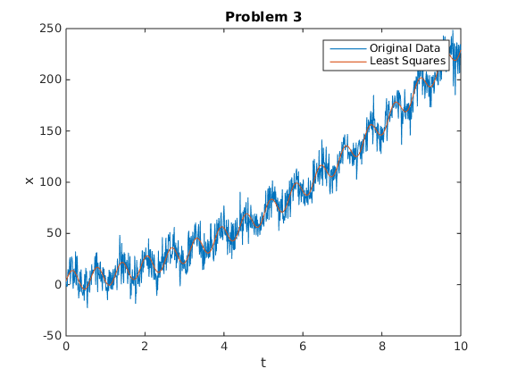

Contents
Problem 2
clear all
close all
syms t
p1 = 1-t^2;
p2 = exp(-t);
y = -1 + t^2 ;
z = 2 + t + t^3;
check_in_product = double(int(z*y,0,1));
q1 = simplify(expand(simplify(y/(int(y^2,0,1)^0.5))));
e2 = z - int(q1*z,0,1)/(int(q1^2,0,1)^0.5)*q1;
q2 = simplify(expand(simplify(e2/(int(e2^2,0,1)^0.5))));
check_in_product = double(int(q1*q2,0,1));
expand(simplify(expand(simplify(expand(q1+(249/(2*5810^(1/2))*q2))))));
Problem 3
clear all
close all
load mid1_p3_data.mat
D = [sin(10*t'), t'.^2, t', ones(length(t),1)];
f = inv(D'*D)*D'*x';
A = f(1)
a = f(2)
b = f(3)
c = f(4)
plot(t,x)
hold on
plot(t,D*f)
title('Problem 3')
legend('Original Data', 'Least Squares')
xlabel('t')
ylabel('x')
A =
9.8557
a =
1.9914
b =
3.1567
c =
3.4535

Problem 4
clear all
close all
u = 4*[100; 100; 100; 100; 100; -100; -100; -100; -100; -100];
current_employees = 0;
x = 0;
for i = 1:10,
current_employees = current_employees + u(i);
x = x + 100*current_employees;
end